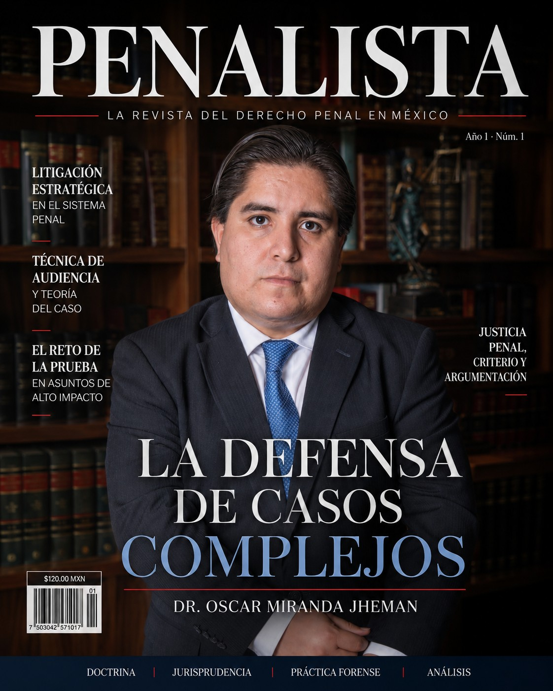

Un proyecto académico de prestigio
Penalista es el proyecto editorial impulsado por Miranda Jheman Abogados para fortalecer la discusión jurídica en materia penal más allá de la trinchera del litigio diario. En cada número reunimos artículos de doctrina, comentarios de jurisprudencia reciente y estudios de práctica forense, escritos con el rigor que exige la academia y la utilidad que exige el ejercicio profesional cotidiano.
El primer número, "La defensa de casos complejos", está dirigido por el Mtro. Oscar Miranda Jheman, socio fundador del despacho, y aborda algunos de los temas centrales del litigio penal contemporáneo:
- Litigación estratégica en el sistema penal acusatorio.
- Técnica de audiencia y teoría del caso.
- El reto de la prueba en asuntos de alto impacto.
- Justicia penal criterio y argumentación jurídica.
Líneas editoriales
Doctrina
Artículos de análisis jurídico sobre las instituciones del derecho penal sustantivo y procesal.
Jurisprudencia
Comentarios a criterios y precedentes relevantes emitidos por tribunales nacionales e internacionales.
Práctica forense
Herramientas y estrategias de litigación aplicables al ejercicio diario en tribunales.
Análisis
Reflexiones sobre reformas legislativas, política criminal y el futuro del sistema de justicia penal.
Por qué creamos Penalista
Con Penalista buscamos consolidar un referente editorial en el debate jurídico-penal mexicano: un espacio de rigor académico que dialogue con la práctica cotidiana de tribunales y despachos, y que sirva como plataforma para que especialistas, litigantes y estudiantes compartan ideas que hagan avanzar la defensa penal en nuestro país.
¿Quiere colaborar o recibir Penalista?
Escríbanos si desea proponer un artículo, suscribirse o conocer más sobre el proyecto editorial.